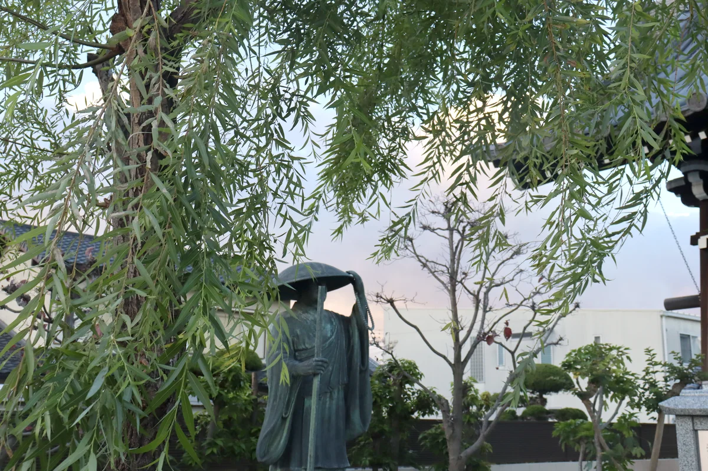
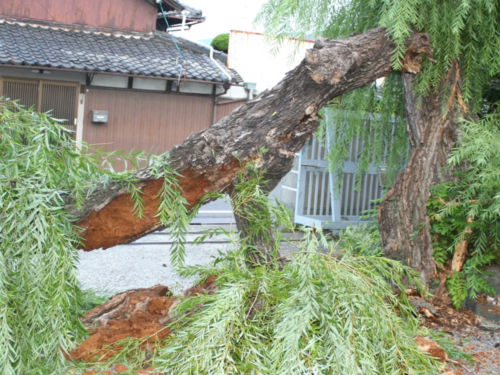
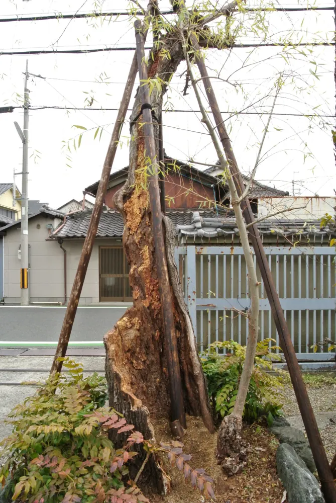
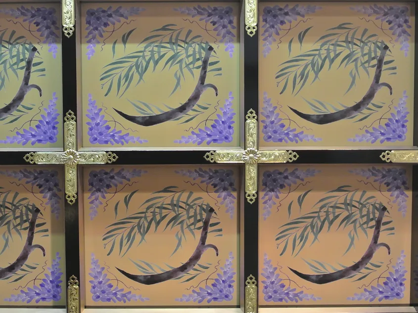
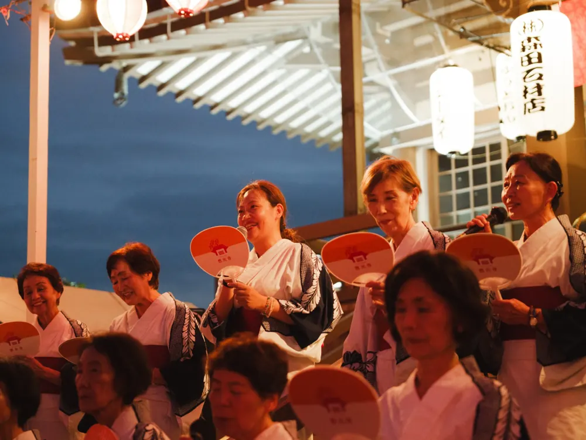
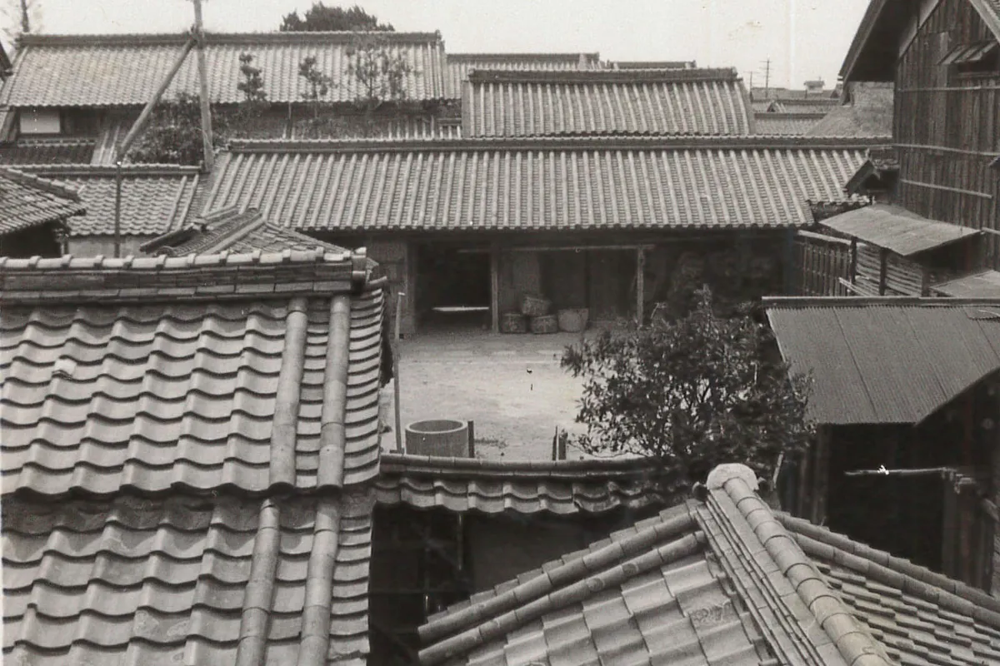

恵光寺の歴史
柳とともに、550年
蓮如上人の河内布教を縁に建立されて、550年。お念仏の声とともに歩んできました。
蓮如上人お手植えの柳
全国でここだけ、
蓮如上人がお手植えされた柳がそびえるお寺

境内入口の柳は、蓮如上人がお手植えされた柳で、恵光寺が「柳の御坊」と呼ばれる由来となっています。現在の柳は五代目にあたります。
4代目から5代目へ
2009年（平成21年）8月8日、4代目の柳が突然倒れました。その後、4代目の幹の脇から伸びてきた若い枝が育ち、いまの5代目の柳となっています。倒れた幹から新しいいのちが芽吹き、柳は今も受け継がれています。


また、明治期までは「蓮如松」と呼ばれる名木もありましたが、惜しまれつつも枯死しました。
恵光寺のあちこちに、柳



由緒
恵光寺の建立
本願寺第8世・蓮如上人が河内布教の折にこの地に立ち寄られて建立され、のちに上人の六男・蓮淳法師が初代住職となりました。1470年（文明2年）のことです。
大坂の六人坊主と恵光寺
歴史学者の小谷利明先生（八尾市歴史民俗資料館前館長）によると、戦国時代の恵光寺は、本願寺に直接つながる有力なお寺でした。恵光寺で出家した賢心は、本願寺に直接仕える「直参坊主」であり、大坂を取り仕切る「大坂六人坊主」の一人として、大坂にも拠点をもち、毎年お盆には本願寺へ盆灯籠を寄進するほどの立場にありました。1532年（天文元年）の天文の一向一揆では、本願寺から頼まれて立ち上がった大坂の門徒衆の中心に、恵光寺がいたのです。
本願寺が大坂に移ると、恵光寺は御坊の普請に430人もの門徒を連れて駆けつけています。織田信長が直接率いた家来が700人ほどといわれる時代です。小谷先生は「恵光寺の動員力は信長に匹敵する」と語ります。
1538年（天文7年）に賢心が亡くなると、門徒たちは本願寺に住職を迎えたいと願い出て、蓮淳法師の孫・慶超が入寺しました。こうして恵光寺は、本願寺のご一門が住職をつとめる「一家衆寺院」となりました。本願寺に直接仕える直参坊主のお寺として力をつけてきた恵光寺は、本願寺のご一門と深く結びつきながら、新たな歩みを始めたのです。
河内一向一揆と恵光寺
元亀元年（1570年）に石山合戦が始まると、恵光寺は河内一向一揆の拠点寺院として、大坂の本願寺を支えました。
そのため織田信長の軍勢は幾度となく萱振の焼き討ちを試み、人々はお寺を堅牢な土塁で囲んで徹底抗戦しました。天正4年（1576年）9月に焼き討ちにあったのちも、和睦に応じない勢力の側について抵抗を続けましたが、天正8年（1580年）8月、石山本願寺が炎上したのと同じ月にお寺に火が放たれ、伽藍は壊滅しました。翌月、石山合戦が終わったのちも第4世・良慧法師は信長勢に挑み、27歳で戦死しています。
東西分裂と再興の歩み
かつては河内・大和に100か寺におよぶ末寺を擁した恵光寺でしたが、1685年（貞享2年）、住職・寂永法師は寺を退去し、寺宝の多くが摂津（現在の平野）へ移されました。一時は住職不在となりましたが、「懸所（別院）」として伽藍と境内は守り抜かれ、江戸末期に再び住職を迎えました。明治時代には本願寺より「別格寺」の寺格を認許されています。
女性たちが支えてきたお寺
恵光寺は、女性の活躍が目立つお寺です。明治のころには「尼講中」の女性たちが、本堂の白幕や打敷を寄進して報恩講を支えました。
昭和の初めには、本多綾氏が夫の早世を受けてお寺を守る決意をし、1932年（昭和7年）の第5回女僧侶得度式で得度。住職となる資格まで取得しました。
その思いは、いまの仏教婦人会にも受け継がれています。
本堂焼失と悲願の落慶
1976年（昭和51年）6月23日、不慮の火災により、320年の歴史を誇った本堂や大玄関が全焼しました。御本尊は当時の住職によって無事に救い出されましたが、親鸞聖人真向きの御影、聖徳太子御木造など貴重な寺宝の多くが失われました。本願寺第23世・勝如上人より「恵光寺再興の御文章」を賜り、全国5000人もの門信徒のご協力によって再建が決定。焼失からわずか3年後の1979年（昭和54年）に本堂・庫裏が再建され、1980年（昭和55年）11月9日、勝如上人ご親修のもと落成慶讃法要が営まれました。
写真でたどる恵光寺
写真をタップすると、大きく見られます。
年表
- 1470年（文明2年）蓮如上人がこの地に立ち寄られて建立。のちに上人の六男・蓮淳法師が初代住職となる
- 1532年（天文元年）天文の一向一揆。大坂六人坊主の一人・恵光寺の賢心のもと、恵光寺が大坂の門徒衆の中心となる
- 1533年（天文2年）本願寺が山科から大坂へ移る。のちの大坂本願寺の普請に、恵光寺は430人の門徒を連れて参加する
- 1538年（天文7年）賢心が亡くなり、門徒の願いにより蓮淳法師の孫・慶超が入寺。本願寺の一家衆寺院となる
- 1570年（元亀元年）石山合戦が始まる。恵光寺は河内一向一揆の拠点となる
- 1576年（天正4年）9月、織田信長の軍勢により焼き討ちにあう
- 1580年（天正8年）8月、石山本願寺が炎上したのと同じ月に火を放たれ、伽藍が壊滅。翌月、第4世・良慧法師が27歳で戦死
- 1685年（貞享2年）寂永法師が寺を退去。以後、懸所（別院）となる
- 江戸末期再び住職を迎える
- 1911年（明治44年）宗祖親鸞聖人六百五十回大遠忌を記念して、本願寺より「別格寺」に昇格。12月、表門（山門）の上棟式をおこなう
- 大正期鐘楼が建立される
- 1932年（昭和7年）2月16日、本多綾氏が第5回女僧侶得度式で得度。夫の早世を受け、住職となる資格まで取得する
- 1933年（昭和8年）10月、峯旭師の寄進により、本堂内陣・外陣の絵天井が完成する
- 1942年（昭和17年）11月28日、梵鐘を供出する
- 1951年（昭和26年）3月24日から26日にかけて、蓮如上人四百五十回忌法要とあわせて、新しい梵鐘の落慶法要と戦争犠牲者追悼法要をつとめる
- 1957年（昭和32年）10月、親鸞聖人七百回大遠忌法要をつとめる
- 1970年（昭和45年）10月、開創五百年記念法要 並びに報恩講をつとめる
- 1976年（昭和51年）6月23日、火災により本堂・大玄関が全焼する。11月18日、勝如上人より「恵光寺再興の御文章」を賜る
- 1979年（昭和54年）全国5千人の方々から寄せられたご寄付により、本堂・庫裏が再建される
- 1980年（昭和55年）11月9日、勝如上人ご親修のもと本堂落成慶讃法要をつとめる
- 1997年（平成9年）5月5日、蓮如上人五百回遠忌法要をつとめる。門信徒会・仏教婦人会・スカウト・大徳会が力をあわせる
- 2003年（平成15年）慧灯大師盆おどりが始まる
- 2009年（平成21年）8月8日、4代目の柳が突然倒れる。脇から伸びた枝が5代目として育つ
- 2011年（平成23年）手洗館が再建される
- 2013年（平成25年）式秀部屋への宿舎提供が始まる（交流ちゃんこ会）
- 2021年（令和3年）創建550年記念法要をつとめる
- 2024年（令和6年）かやふりフェスタが始まる
- 2025年（令和7年）ほっとひといき本堂コンサートが始まる
歴代住職
- 初代蓮淳（蓮如上人の六男）
- 2世実慧（蓮淳の二男）
- 3世慶超（実慧の三男・蓮淳の孫）
- 4世良慧（長島御坊・証慧の二男）
- 5世良超（良慧の長男）
- 6世准良（准如上人の八男）
- 7世寂永（准良の長男）
- 8世本覚（本如上人の甥）
- 9世広円（本覚の長男）
- 10世峯旭明如上人の命を受け、八尾・光蓮寺より入寺。本堂の天井画や荒れ果てた境内の修繕に奔走し、「恵光寺中興の祖」と呼ばれる
- 11世淳信スカウト活動を始める。本堂焼失ののち、再建を果たす
- 12世至成手洗館を再建。慧灯大師盆おどりを始める
- 13世真成現住職
境内と伝承
念仏橋の由来
恵光寺から南へ歩いて三分ほどの橋は、かつて「念仏橋」と呼ばれていました。参詣の人々が道すがら絶えずお念仏を称えていたことから名づけられたといわれます。
門徒の隆盛
「牛の毛の数は読めても、萱振御坊の門徒の数は読めぬ」。寺史にはそう記されるほど、当寺を支える門徒の多さは計り知れないものでした。
地域の道標
かつて村の人々は「大坂からの帰り道は、恵光寺の屋根を目印にせよ」と語り合っていたそうです。
山門・鐘楼
山門は明治期、鐘楼は大正期に建立された歴史ある建造物です。
本堂・庫裏・手洗館
本堂と庫裏は1979年（昭和54年）、手洗館は2011年（平成23年）に再建されました。
合同墓「あおやぎ」・ペット合同墓「わかば」
境内に入ってすぐ。車いすでもお参りいただけます。
萱振寺内町

萱振は古墳も見つかっている、たいへん古い集落です。歴史学者の小谷利明先生（八尾市歴史民俗資料館 前館長）によると、史料に見える「萱振城」とは、天守閣のある城ではなく、恵光寺を中心に土塁と環濠をめぐらせた寺内町そのもののことだと考えられます。お寺と集落をまるごと守る、城のような町だったのです。1612年の史料にも、相当分厚い土塁が築かれていたことが記されています。
町の出入口では道が何度も折れ曲がり、北・東・西は高く分厚い土塁で、南は沼のような田んぼで守られていました。今も萱振の道筋には、その名残が見られます。
小谷先生は、少なくとも慶超が住職をつとめた戦国時代の半ばには、寺内町ができていたと考えています。そのころの萱振には、河内守護・畠山氏の重臣だった萱振氏がおり、奈良・興福寺の記録に、米も銭もあふれていると記されるほど、河内一の豊かさを誇っていました。
萱振寺内町歴史勉強会について